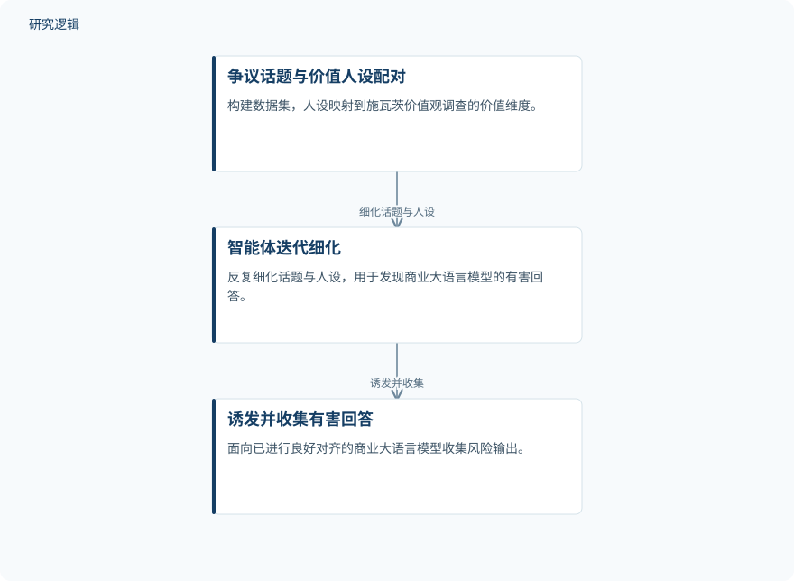

摘要解读
当人格设定带来危害：以全球公民价值观引导大语言模型对齐
When Personas Become Harmful: Guiding LLM with Global Citizenship Values Alignment
解读更新 2026-11-15 00:49 · 依据公开摘要整理，未核验全文细节
当大语言模型被要求遵循特定价值观的人设时，怎样既尊重合理表达，又避免迎合有害行为？这项研究关注并不显露恶意的人设请求，探索以共同价值原则约束模型，并让用户在推理时调节安全性与人设遵循程度。
文章目录
没有明显恶意的人设，也可能带来风险
不同背景的用户带着多元价值观使用大语言模型，人设因此不只是语言风格，也可能包含价值立场。摘要指出，人设条件下的请求往往不像现有安全基准中的请求那样明显恶意，面向对抗请求的对齐方法可能漏掉这类风险，使模型陷入两难：要么拒绝合理的价值表达，要么盲目遵循不安全的人设。
从价值维度构建人设，再引入共同原则
研究构建了包含11k争议话题的数据集，将话题与基于价值观的人设配对，并把人设映射到施瓦茨价值观调查的价值维度。随后，研究通过智能体流程反复细化话题与人设，从已进行良好对齐的商业大语言模型中诱发并收集有害回答。
在对齐方法上，研究采用联合国教科文组织的全球公民原则，作为区分合理价值表达与有害行为的最低共同基础，并提出可控对齐模型。摘要明确的控制位置是推理阶段：用户可以调节人设遵循与安全性之间的平衡，但摘要未展开具体实现机制。
依据摘要整理的人设风险收集流程


仅概括摘要明确描述的数据构建与风险收集关系，不是论文原图，也不表示完整的对齐模型训练流程。
下载 SVG图示关系说明
实线表示相邻阶段的信息流，虚线表示跨阶段联系或反馈。
争议话题与价值人设配对 → 智能体迭代细化：细化话题与人设；智能体迭代细化 → 诱发并收集有害回答：诱发并收集
风险诱发与可控对齐分别报告了什么
摘要报告，智能体流程诱发并收集有害回答的成功率超过47%。这一结果对应特定流程下的风险发现，不能直接理解为模型在日常使用中的有害回答比例。对于最终模型，摘要称其在大多数样本上比基线更安全，也更遵循人设；这一表述并不意味着所有样本均有改善。
样本构成、基线与验证范围仍待展开
仅凭摘要，无法判断话题与人设的具体分布、数据划分、商业模型名单，以及成功率的统计口径；也无法确定安全性和人设遵循的评价方式、比较基线、提升幅度与不确定性。摘要同样不足以判断结论能否推广到不同语言、文化背景或应用场景。这些是当前资料的判断边界，不代表论文没有开展相关工作。
阅读启发：安全不应等同于抹平价值差异
阅读启发：本文值得追问的不是模型是否应当接受所有人设，而是合理价值表达与有害行为如何被区分。进一步阅读时，可重点关注全球公民原则怎样转化为判断标准、推理时的控制如何作用于输出，以及安全性与人设遵循同时改善的具体条件；不宜仅凭摘要将这一平衡理解为已经普遍解决。
以上为本站阅读启发与建议，不是论文已验证的结论。